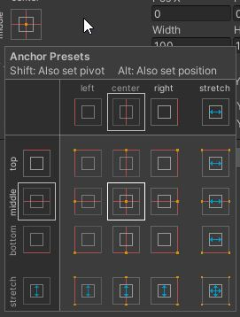
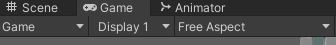

Dans Unity, on peut facilement créer des menus 'responsive' grâce à l'UI.
Pour pouvoir créer des composantes reliées à l'UI, vous aurez absolument besoin de créer un Canvas. Le canvas sert à contenir tous les éléments du UI et à les classer entre eux. Ainsi, si un GameObject est plus bas qu'un autre dans le canvas, il sera au-dessus. Ici, clé apparaîtra par-dessus le calque boutons:
Pour créer un Canvas, on peut faire un clic droit dans la Hierarchy, ensuite aller dans UI, puis cliquer sur Canvas.
Le gameobject Canvas a plusieurs paramètres que nous pouvons ajuster. Vous remarquerez que vous ne pouvez pas modifier son Rect Transform. En effet, c'est avec les composantes Canvas et Canvas scaler que vous pourrez modifier la taille de votre Canvas.
Composante Canvas: Pour cette composante, nous pouvons ajuster le paramètre Render mode au besoin. Ce mode détermine de quelle façon le Canvas sera rendu. Par défaut, c'est Screen Space - Overlay qui sera choisi. Cela signifie que le Canvas sera rendu par-dessus la scène et que si la taille de l'écran est modifié, il sera modifié lui aussi. Screen space - camera est assez similaire, plutôt que de rendre le canvas sur la fenêtre, on le rend sur la caméra. Ainsi, le canvas suivra la position et la taille de la caméra. Finalement, World space fera en sorte que le canvas se comporte comme les autres objets de la scène. Ainsi, il restera à l'emplacement qu'on lui assigne et sa taille ne sera pas modifiée par l'écran.
Composante Canvas Scaler: C'est grâce à cette composante qu'on déterminera la taille de notre Canvas. Constant pixel size fait en sorte que le canvas sera toujours de la même taille en pixels peut importe la taille de notre écran. Scale with screen size permet au canvas de s'adapter à la taille de l'écran. On donne une référence de résolution (exemple: 1920 x 1080) et ensuite on indique de quelle façon on souhaite que le canvas s'ajuste à l'écran. On peut déterminer si on considère la largeur ou la longeur comme point de référence. Sinon on peut dire de rapetisser ou d'agrandir dans l'écran.
Les objets qui font partie du UI n'ont pas de Transform, mais ont une composante Rect Transform. Celui-ci est similaire au Transform, mais il a quelques paramètres supplémentaires pour le placement des éléments dans le Canvas.
Le premier paramètre est l'ancrage. Lorsque l'on appuie sur la cible rouge, le panneau Anchor Preset qu'on voit ci-haut s'ouvre. Ce dernier détermine de quelle façon les éléments graphiques 2D s'adapteront à la redimension de l'écran. Si vous cochez un paramètre rouge, l'objet ne changera pas de taille. Les paramètres rouges indiquent à quel endroit l'objet devrait s'accrocher. Ainsi, doit-il rester au centre ou plutôt se fier à un coin? Les paramètres bleus pour leur part étirent l'objet. L'objet doit-il s'étirer de tous les côtés ou seulement horizontalement ou verticalement dans l'écran. Pour voir ce que ces paramètres font, mettez vous en mode test, mettez votre fenêtre en mode Free Aspect, puis redimenssionnez la pour voir ce qui est modifié.
Le GameObject panel peut être créé à partir de la fenêtre Hierarchy en faisant un clic droit, puis dans UI, on sélectionne Panel. Le GameObject panel sert à regrouper des composantes. Un exemple d'application courante est de créer un menu et de mettre ses composantes dans le panel. Le panel a une composante image qui nous permet de mettre une image de fond sur le menu. Par défaut, le pannel prend toute la taille de l'écran, mais on peut modifier cela dans le RectTransform.
Une image est un GameObject qui permet d'afficher des images dans votre UI. Ce GameObject est très similaire à Sprite à la différence qu'il est fait pour le UI.
Le bouton est une composante importante dans Unity. En effet, celui-ci nous permet de déclencher différents scripts lorsque l'utilisateur appuie sur celui-ci.
L'allure du bouton est personnalisable grâce à la composante Image du GameObject bouton. La composante Button nous permet quant à elle de gérer l'interaction du bouton. Le paramètre transition nous permet de choisir si on désire que le bouton change de couleur ou plutôt de Sprite lorsqu'on appuie sur ce dernier. On peut ensuite déterminer des couleurs ou des sprites pour chaque état du bouton. L'événement On Click nous permet d'activer ce que nous souhaitons lorsque le bouton est cliqué.
Le GameObject Text permet de modifier le texte écrit sur le bouton. On peut le supprimer si notre bouton est seulement une image.
Similaire au bouton, le Toggle est une composante que vous pouvez cocher. Vous pouvez déclencher des comportements dans votre jeu selon la valeur du toggle. Le toggle a un événement On value change, donc dès que la valeur change vous pouvez la vérifier et coder un comportement à suivre.
Dans la composante Toggle, la variable Is On vous permet de déterminer si le bouton est coché ou non au début de votre jeu.
Le GameObject Background vous permet de changer le fond de la case à cocher. Checkmark vous permet de changer le crochet dans la boîte et Label le texte qui l'accompagne.
Le slider est une composante préfaite qui permet au joueur d'ajuster la valeur de quelque chose. Comme le Toggle, un événement On value change est déclenché dès que le joueur modifie la valeur.
Dans la composante Slider, le paramètre direction nous permet de choisir dans quel sens est positionné la composante. Min et max value permettent de choisir les valeurs minimales et maximales. Lorsque l'on coche Whole number, le chiffre que nous renvoie le slider est un int. Si c'est décoché, on reçoit un float.
Les GameObject à l'intérieur de la composante nous permettent de modifier son allure.
Le texte a son propre module: